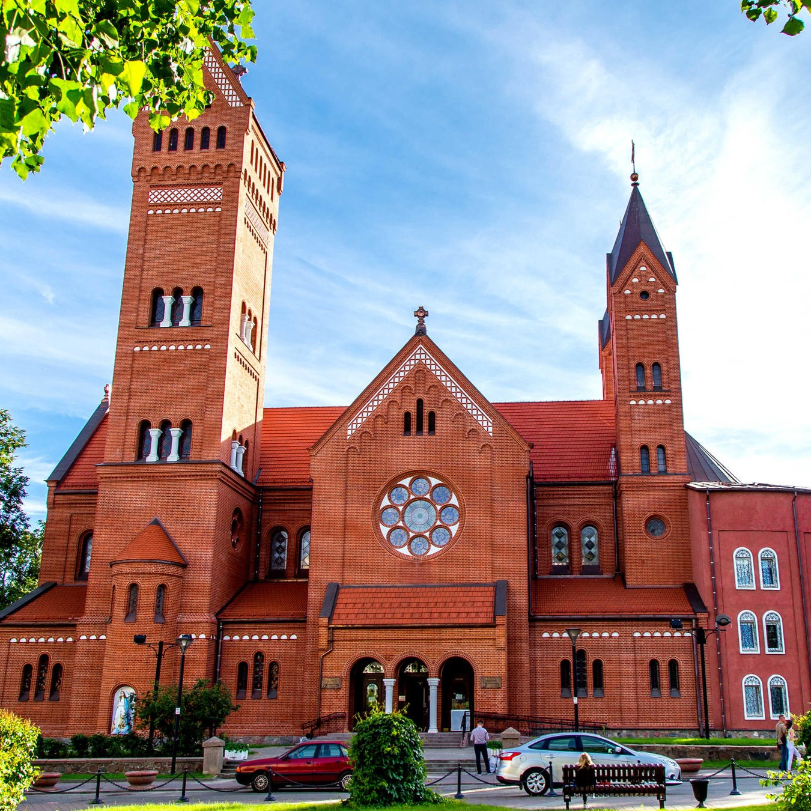

Костел Святых Семеона и Елены |
|  |
|
Костел Святых Семеона и Елены - наиболее известный католический храм Минска. Административно относится к юго-восточному деканату Минско-Могилёвской архиепархии. Памятник архитектуры, включён в Государственный список историко-культурных ценностей Республики Беларусь. В ряде источников, включая воспоминания самого фундатора храма Эдварда Войниловича, стиль храма характеризуется как неороманский, в ряде других — как неоготика с чертами модерна. Костёл находится на площади Независимости в непосредственной близости от Дома Правительства. |